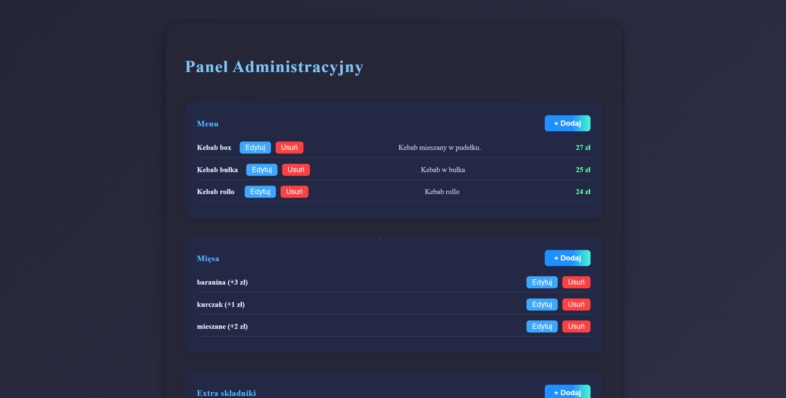
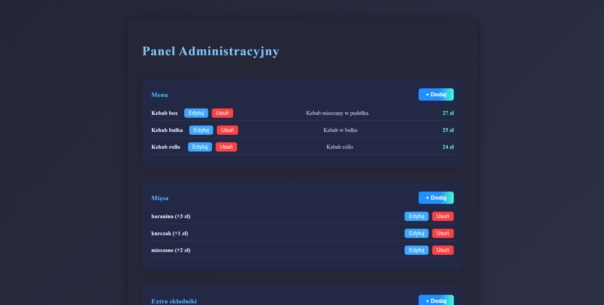

SklepAPI
Opis
Projekt backendu do aplikacji restauracyjnej kebab, która umożliwia zamawianie jedzenia online, użytkownik ma możliwość zamówienia kebaba, wyboru sosu, mięsa, dodatków, wyboru dostawy, zapłaty. Admin ma możliwość zarządzania menu. Pracownicy mają dostają zamówienia w czasie rzeczywistym za pomocą SignalR.
Technologie:
Repozytorium-backend
Swagger
- C# 12, .NET 8.0 (ASP.NET Core WebAPI)
- REST, JSON, obsługa plików
- .NET Core DI
- Dokumentacja: Swagger / OpenAPI (Swashbuckle)
- Logowanie: Serilog
- Konteneryzacja: Docker
- Kontrola wersji: Git
- Baza danych: Azure SQL Database
- Zdjęcia: Azure Blob Storage
- Płatności: Stripe
- Powiadomienia w czasie rzeczywistym: SignalR
- Mapy: Azure Maps
Hosting w platformie azure za pomocą azure Container app.
Frontend:angular/Typescript
Obsługa Tokenu
Obsługa SignalR
Repozytorium-frontend-sklep Demo sklepu w Azure
Repozytorium-frontend-manager Demo manager w Azure
Repozytorium-frontend-dashboard Demo dashboard w Azure

 
